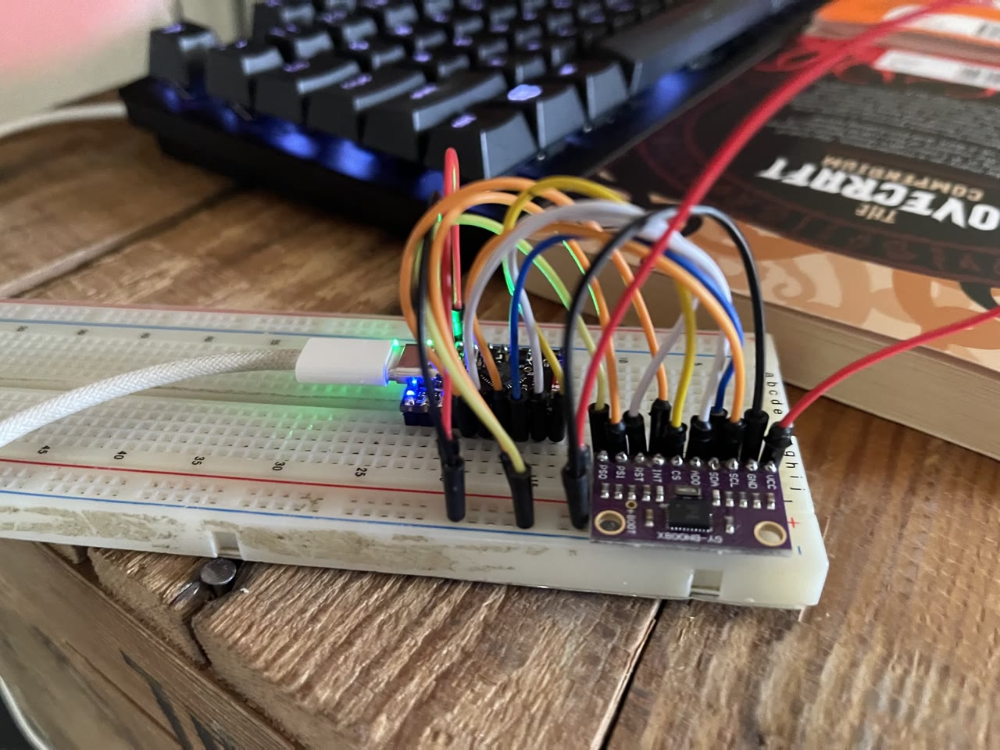
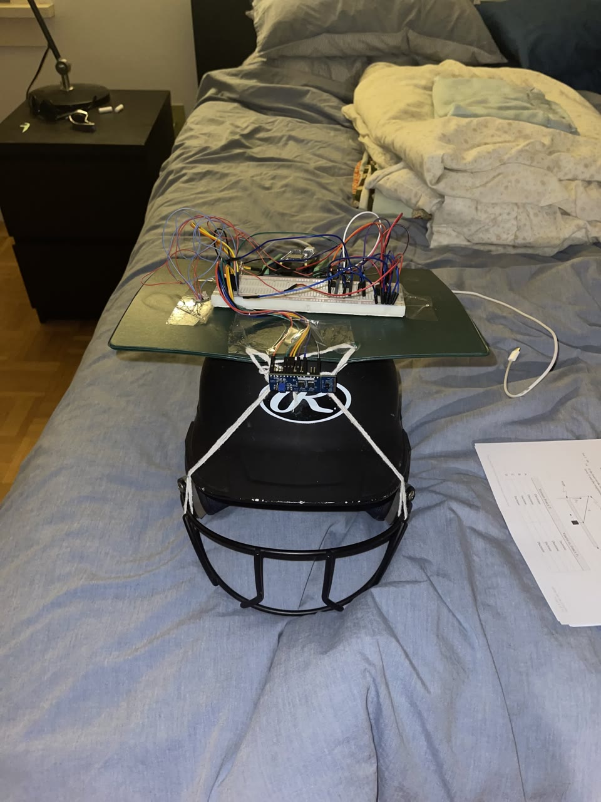

Assistive Navigation Helmet
A friend built a cane that vibrates when something is ahead. This is the same idea with a far richer signal: a wearable for blind and low-vision users that turns two 8×8 depth grids and head orientation into directional vibration, so an obstacle on your left buzzes your left temple before you reach it.
An ESP32-S3 runs two ST VL53L8CX time-of-flight sensors on independent I²C buses (both ship fixed at address 0x29; separate buses sidestep the collision). The bottom sensor angles ~30° down for ground-level obstacles, with a per-row cosine table converting slant range to true forward distance; the top sensor watches for head-height overhangs. A BNO085 IMU tracks head orientation at 100 Hz, and three coin motors (forehead, left temple, right temple) render direction. Firmware ships over the air with bootloader rollback, and live data streams to a desktop 3-D point cloud and a phone heatmap viewer.
Three stacked bugs, one IMU driver
Every available BNO085 library for this setup was SPI-only, so I wrote the I²C SH-2/SHTP transport from scratch and hit three independent bugs, each hiding the next. The probe ACKed at 0x4B but the real address was 0x4A: an ACK can lie, and ground truth is which address returns valid protocol data. Then the handshake worked exactly once per physical power-up and never again, because the chip broadcasts its channel advertisement once, at power-on, and reflashing resets the ESP but not the IMU; the fix is forcing a hub reset on every boot. Finally, the ToF sensor's 84 KB firmware upload blocked the bus for a full second, and an unserviced BNO085 starves and stops reporting. It now gets its own 500 Hz service task and a shared-bus mutex.
Measure, don't guess: dropping the magnetometer
The motors sit ~5 cm from the IMU, intuitively too far to disturb a magnetometer. An A/B test said otherwise: with motors running, the chip's own heading-confidence estimate collapsed from 4.8° to 39° and threw a 60° heading jump, exactly when a real obstacle alert would fire. The physics agrees: Earth's horizontal field here is ~18 µT, and a spinning rotor magnet at 5 cm adds a few µT of time-varying field the fusion can't model. The helmet now runs the mag-free AR/VR-stabilized rotation vector, the mode the datasheet itself recommends for head tracking in disturbed fields, and calibration tuning cut dynamic yaw drift from +2.24° to +0.82° per run (~63%).
Haptics a person can actually read
Obstacle direction maps to motors through hard regions with a squared urgency curve and dominance weighting (the most urgent direction stays at full strength, others scale to 70%), choices taken from the vibrotactile literature rather than vibes. The first build exposed a gap the papers don't mention: coin ERM motors don't spin below roughly half duty, so a pure squared curve meant silence until 20 cm and then sudden full power. The curve now maps onto the motor's usable band, starting at a just-perceptible 51% floor the instant an alert begins.
- Also run to ground: a 2 ms task delay that compiled to zero ticks at a 100 Hz tick rate, silently starving the sensor loop on unlucky boots
- A debug switch that bridged 3.3 V to ground mid-flip and browned out the board: logic-level switches should never carry a power rail
- Every fix, dead end, and root cause is written up in the repo's engineering devlog
Where it stands: both depth streams and the IMU run concurrently (~30 Hz ranging, 100 Hz orientation) with directional haptics live on the bench. Phase 1 shipped; Phase 2 adds a camera; Phase 3 fuses all three.